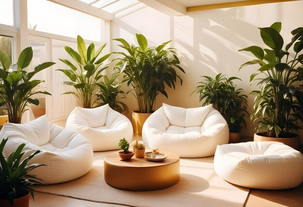
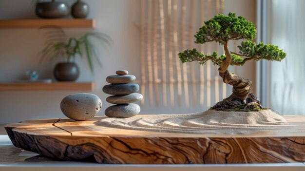
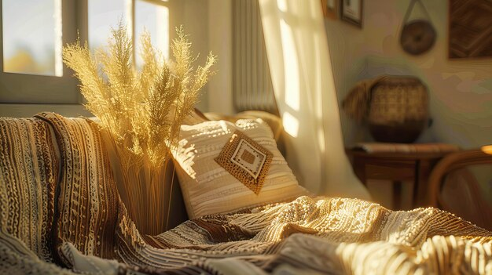
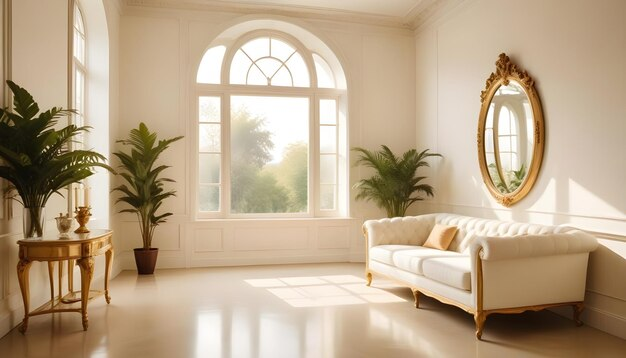
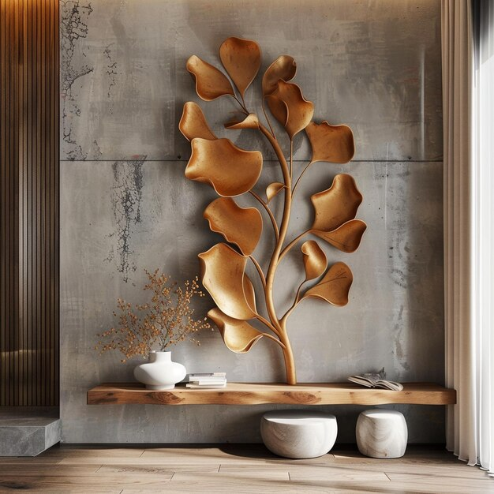
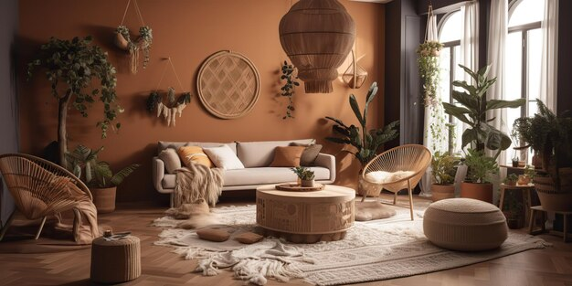
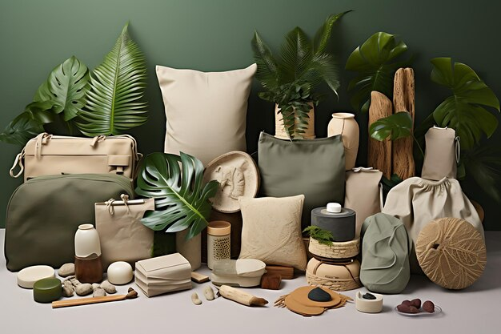

.jpg)
प्राकृतिक तत्वों को शामिल करें, गर्मजोशी और संतुलन के लिए
प्रकृति को घर के अंदर लाना आपके घर को अधिक शांत और स्वागत योग्य बना सकता है। लकड़ी, पत्थर और पौधों जैसी प्राकृतिक सामग्री गर्मी और बनावट जोड़ती हैं, जिससे एक संतुलित और स्थिर वातावरण बनता है। लकड़ी के फर्नीचर या पत्थर के काउंटरटॉप्स का उपयोग करने पर विचार करें, जो कपड़े जैसी नरम सामग्रियों के साथ एक अच्छा विपरीत प्रस्तुत करते हैं। पौधे प्रकृति को शामिल करने का एक और उत्कृष्ट तरीका हैं; वे न केवल हवा को शुद्ध करते हैं बल्कि आपकी सजावट में एक ताजगी और जैविक भावना भी जोड़ते हैं। यहां तक कि छोटे-छोटे स्पर्श जैसे बुनाई वाली टोकरी या मिट्टी के बर्तन भी कमरे में प्राकृतिक महसूस को बढ़ा सकते हैं।
- लकड़ी की चीजें

- फर्नीचर: लकड़ी के फर्नीचर जैसे कि कॉफी टेबल, किताबों की अलमारियाँ, और बेड फ्रेम चुनें। प्राकृतिक फिनिश या हल्के रंग की लकड़ी का चयन करें।
- सजावटी सामान: गर्माहट लाने के लिए लकड़ी के फोटो फ्रेम, ट्रे, या सजावटी कटोरे का उपयोग करें।
- पौधे

- घर के पौधे: घर के पौधों की अलग-अलग किस्में जैसे फर्न, सक्यूलेंट्स, या पीस लिलीज़ शामिल करें। ये न केवल जगह में जीवन लाते हैं, बल्कि हवा की गुणवत्ता भी सुधारते हैं।
- गमले: प्राकृतिक सामग्री जैसे कि मिट्टी, सिरेमिक, या बुने हुए बास्केट के गमले चुनें।
- पत्थर और खनिज

- सजावटी पत्थर: सजावट के लिए पत्थरों का उपयोग करें, जैसे कि फूलदान में या पेपरवेट के रूप में।
- सतह की सामग्री: प्राकृतिक सुंदरता के लिए ग्रेनाइट या संगमरमर के काउंटरटॉप्स पर विचार करें।
- प्राकृतिक कपड़े

- कपड़े: अपने तकियों, गलीचों, और पर्दों में ऊन, कपास, लिनन, या जूट जैसे कपड़े शामिल करें।
- बिस्तर का सामान: सुखद और गर्माहट बढ़ाने के लिए प्राकृतिक तंतुओं से बने बिस्तर का सामान चुनें।
- पानी के तत्व
.jpg)
- फव्वारे: क छोटा इनडोर फव्वारा शांत करने वाली आवाज़ और एक सुकून देने वाला माहौल बना सकता है।
- एक्वेरियम: अच्छी तरह से रखरखाव किया गया एक्वेरियम भी एक जीवंत प्राकृतिक तत्व जोड़ सकता है।
- प्राकृतिक रोशनी

- खिड़कियाँ: प्राकृतिक रोशनी को अधिकतम करें खिड़कियों को ढकने से बचाकर। अगर ज़रूरत हो तो हल्के और हवा-दार पर्दे का उपयोग करें।
- आईने: आईनों को सही जगह पर रखें ताकि वे रोशनी को परावर्तित करें और जगह का एहसास बढ़ा सकें।
- प्राकृतिक आकृतियाँ और पैटर्न

- सजावट: ऐसे सजावट के सामान चुनें जिनकी आकृतियाँ और डिज़ाइन प्राकृतिक रूपों की नकल करें, जैसे पत्तियों के प्रिंट या फूलों के मोटिफ्स।
- कला: ऐसी कला पर विचार करें जिसमें परिदृश्य, प्राकृतिक दृश्य, या प्रकृति से प्रेरित अमूर्त रूप हों।
- रंगों का संयोजन

- धरती के रंग: प्राकृतिक रंगों का उपयोग करें, जैसे कि मिट्टी के भूरे, हरे, और हल्के नीले रंग। ये रंग एक शांत और संतुलित माहौल बनाते हैं।
- सजावटी रंग: चमकदार, प्राकृतिक प्रेरित रंग जैसे गहरे जंगल हरे या गर्म मिट्टी के रंग को शामिल करें।
- प्राकृतिक सुगंध

- आवश्यक तेल: प्राकृतिक सुगंध वाले आवश्यक तेल डिफ्यूज़र का उपयोग करें, जैसे लैवेंडर, देवदार, या यूकेलिप्टस।
- Candles: मधुमक्खी के मोम या सोया मोम से बनी और प्राकृतिक सुगंध वाली मोमबत्तियाँ चुनें।
- सतत विकल्प

- पर्यावरण के अनुकूल उत्पाद: ऐसे उत्पाद और सामग्री चुनें जो सतत रूप से प्राप्त की गई हों या पुनर्नवीनीकरण की गई हों।
- स्थानीय सामग्री: जितना संभव हो, अपने क्षेत्र की स्थानीय सामग्री का उपयोग करें ताकि पर्यावरण पर प्रभाव कम हो और स्थानीय कारीगरों को समर्थन मिले।